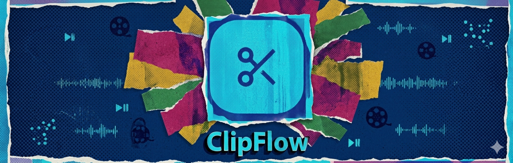
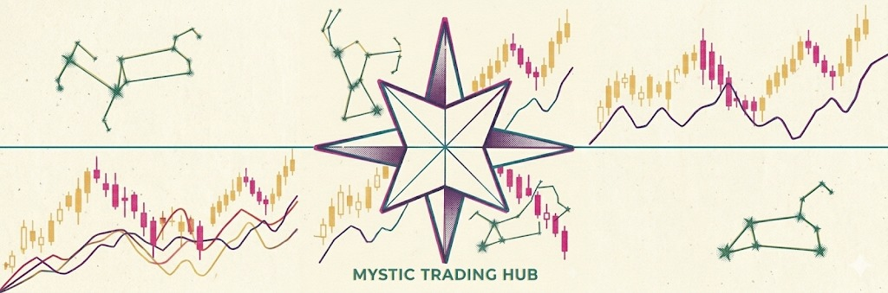
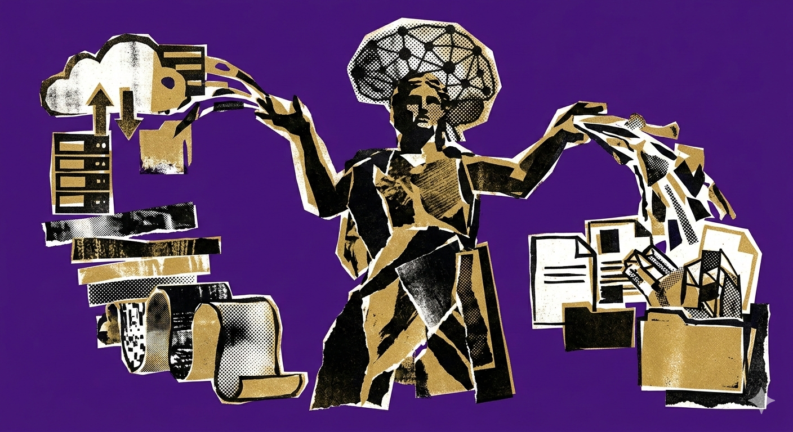

Mis Proyectos
Algunos trabajos recientes que destacan mis habilidades

ClipFlow
Generador de clips para creadores: subí un MP4, la IA genera timestamps, títulos y descripciones; se procesan los clips vía Cloudinary y se entregan con signed URLs.

Mystic Trading
Landing page moderna para comunidad de trading con arquitectura limpia, componentes reutilizables, animaciones fluidas y sistema de temas. Incluye secciones dinámicas y formularios validados.
Proyectos FreeCodeCamp
Múltiples desarrollos web interactivos completando 300+ horas de práctica en HTML, CSS y diseño responsive.

Minerva
Sistema de automatización de documentación técnica con IA. Procesa múltiples archivos de proyecto, genera documentos Word estructurados con 12 secciones profesionales, gestión de versiones e historial de actividad.